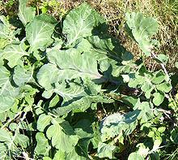
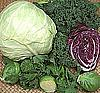
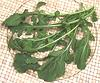
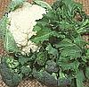
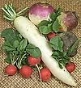
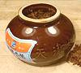
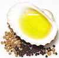
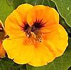
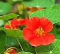

SAFARI
Users
 Wild cabbage, shown in the photo, is native to the coasts of western and southern Europe. All our familiar Western cabbages, including cauliflower, broccoli, kale and others, were developed from this wild plant by human intervention. Asian "cabbages", in contrast, are mostly turnips, but have been similarly breed into many varieties. The Brassica Family Tree explains the relationships. Photo by MPF distributed under license Creative Commons Attribution Share-Alike v3.0.
In China, even today, apartments with balconies are preferred so
there's a cool place to store a mound of cabbages for the winter. Koreans
bury huge jars in the ground in which to make chili laced sauerkraut
(kimchi) without which no meal would be complete. Germany wouldn't really
be Germany without sauerkraut, now would it? Where would the Slavic and
Nordic countries be without Cabbage, Turnips and Radishes? Probably
depopulated. In past times these vegetables meant the difference between
survival and not.
|

Greens
Head & Loose Leaf Greens.
|

Herbs
Watercress Arugula, etc. |
|

Flowers & Pods
Broccoli, Cauliflower.
|

Roots
Radishes, Turnips, etc. |
|

Pickles & Preserves
Sauerkraut, Kimchi, etc. |
 Seeds & Oils |
|  Brassica Family Tree |

Other Brassicales
Capers, Nasturtiums, Drumsticks, Papayas, etc. |